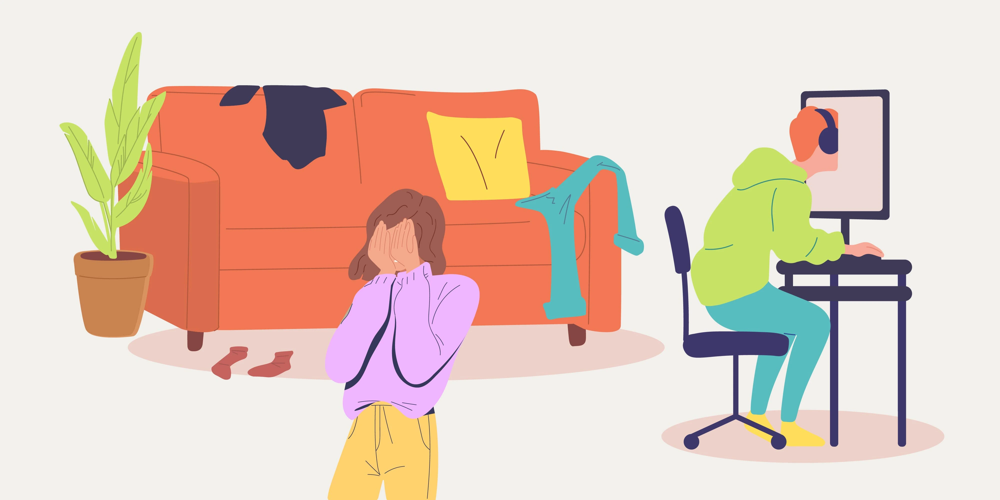
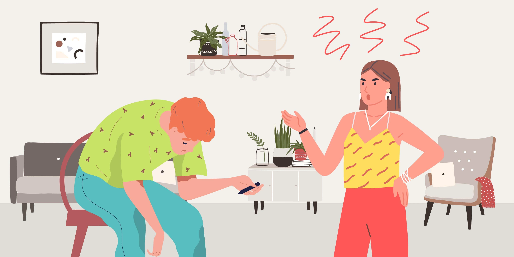
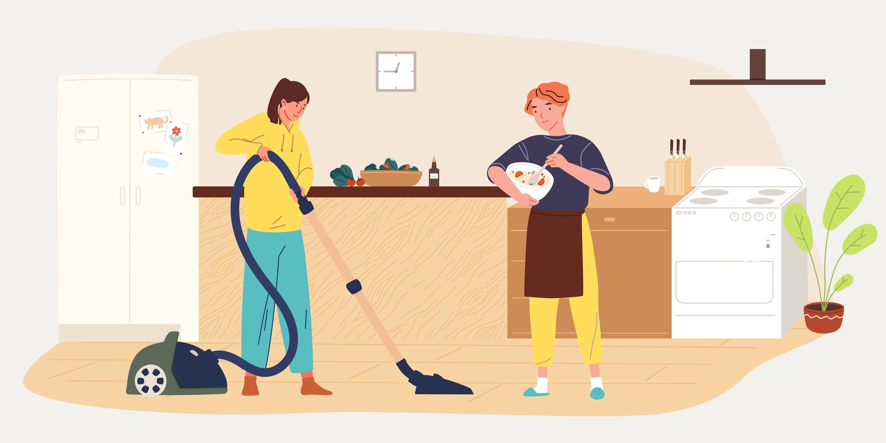

Gaming in Australia
It is thought that over 90% of Australian households have a gaming device, and there are as many types of gamers as there are games. People game for all kinds of reasons; a lot of it is social, collaborative, helps manage stress and aids learning. With the advent of mobile gaming, gamers can play anywhere. For a small percentage however gaming can become all-consuming, a pivotal focus that takes away from other aspects of life. Concerns have been raised for this small fraction of gamers. In this article, we will explore gaming, its impacts and the new potential diagnosis of Internet Gaming Disorder

History of gaming
Electronic games have come a long way since the 1990s. The resolution of screens, improvement in computer processing power and faster internet connections have changed the landscape of gaming. Today it is possible to play a highly customizable game, with cinematic graphics against someone halfway around the world with no noticeable lag time. The popularity of games has also increased. Millions of people await new releases of games, watch others play online using streaming services and partake in busy online chat forums. Over time the gaming genre has also increased. Now there are sports games, fighting, shooting, strategy and puzzle-solving games available. Some longer-term games create a sense of community; there is character development, status and wealth attainment inside an online realm. Game developers are increasingly creating for certain age cohorts; for instance ‘G’ are games open for all, ‘9+’ games are not suitable for children younger than 9 years, whilst ‘M’ means mature audience only.
Healthy gaming and wellbeing
A few studies have shown that regular moderate gameplay is associated with a better sense of wellbeing compared to others. How could we explain this?
- Gaming is another means to practice problem-solving and encourages thinking. Games by their very nature involve a challenge that the user needs to think through. There are planning, memory and communication skills required for a strategy game such as StarCraft.
- First-person shooting games challenge reaction times, focus on alertness and coordination.
- Games like Minecraft have a social component to them, they offer an opportunity to collaborate with others, build social skills and provide a sense of social connectedness.
- Active games for example those played on a Nintendo Switch can provide a means of cardiovascular exercise, the opportunity to de-stress plus connect with others.
When gaming becomes a problem
It is only a small cohort of people who have trouble balancing gaming with other aspects of life. Some people struggle to balance other responsibilities; study, sleep and family commitments with their gaming. Given that gaming is so popular, even if only a small percentage of people have trouble with it. There could be a large total number of people affected. Increasingly Asian and Western countries are researching, implementing curfews and trying other strategies to address problematic gaming

What is Internet Gaming Disorder?
It’s a new term or potential diagnosis. What the American Association of Psychiatrists has proposed is that for the diagnosis to be considered the video play must cause clinically significant impairment. Other criteria they suggest looking for include:
- Preoccupation with games: The individual thinks about previous gaming activity or anticipates playing the next game; gaming becomes the dominant activity in daily life;
- Withdrawal symptoms when gaming is taken away: These symptoms are typically described as irritability, anxiety, or sadness;
- Tolerance: The need to spend increasing amounts of time engaged in games;
- Unsuccessful attempts to control or reduce participation in games;
- Loss of interest in real-life relationships, previous hobbies, and other entertainment as a result of, and with the exception of, games;
- Continued excessive use of games despite knowledge of psychosocial problems;
- Has deceived family members, therapists, or others regarding the amount of gaming;
- Use of games to escape or relieve a negative mood (eg, feelings of helplessness, guilt, or anxiety); and
- Has jeopardized or lost a significant relationship, job, or educational or career opportunity because of participation in games.
The research and degree of evaluation of Internet Gaming Disorder as an illness are still in progress. The findings so far, suggest that it is a problem and causes distress for those affected and their families.
How common is problematic gaming?
The numbers are quite varied and what makes it harder to interpret is that there are still no strict guidelines around diagnosis or formally agreed upon illness criteria. What the numbers suggest is that problematic gaming is more common in adolescents than adults, males than females.
What are some negative consequences of internet gaming?
For most, gaming is a positive experience. However, for some who game excessively, it can cause troubles including:
- Arguments with housemates, family members and those close to the gamer. These likely stem from differing priorities layered on top of interpersonal and historical dynamics between the two people.
- Sleep deprivation is a major concern. Multiplayer video games can be played with people around the world, it’s easy to lose sync with your time zone, healthy regular sleep and awakening times. Long hours to complete a game can also eat into sleep.
- Co-occurring Depression and anxiety are found at higher levels in those with problematic gaming.
- Gaming can get in the way of school assignments and household duties. Late-night gaming can take away from alertness, recall and memory the next day at work.
- Physical effects on your eyesight, posture, spine and overall cardiovascular and bone health.
Screen time guides
Prolonged periods spent sitting isn’t good for your overall health. The Australian Government Department of Health has Physical Activity and Sedentary Behaviour guidelines. These guides suggest:
- For those toddlers younger than 2 years, screen time is not recommended during sedentary periods.
- For children aged 3 to 5. Sedentary screen time should be no more than 1 hour in total throughout the 24-hour period -less is better.
- For children aged 5 to 17. Limit sedentary recreational screen time to no more than 2 hours per day.
- For adults, the guides don’t speak of a limit. Rather they advise breaking up long periods of sitting and minimize the total amount of time spent sitting.
These limits are becoming less and less applicable as we are spending more and more time in front of screens. COVID-19 and the push to work from home, hasn’t helped. These guides will need to evolve with time. But the overall message is clear that screen time needs to be limited and broken up into smaller parts across the day.
When to speak to a doctor or psychologist about problematic gaming?
Internet gaming disorder is a new concept that mental health professionals and GPs are increasingly seeing in their work. If there are some negative consequences described above or other functional impacts then the input should be sought.
What is your doctor likely to want to know?
Most often it is a parent, partner or significant other that raises concerns about the degree of gaming. The person gaming or a loved one can ask for help. Your GP or psychologist may want to know:
- Specific details, including duration, frequency of play and types of games.
- Whether internet gaming disorder is causing conflicts, withdrawal from other aspects of life or impacting relationships
- Signs of poorer mental health, depression, anxiety or worsening sleep patterns.
- Whether there are any underlying maladaptive coping mechanisms, avoidance for example. Presence of any bullying, social anxiety or difficulties in school or work settings.
- If there have been any of the negative consequences described above.

Suggestions to help
It is important to follow the directions of your doctor or therapist. Given that problematic gaming has only recently been considered a disorder, there are no clear treatment guidelines.
Here are some thoughts on what can help:
- Open discussion about internet gaming disorder and concerns by those involved. Are there opportunities for significant others to join?
- Caution around sharing personal information online. Children are likely to need adult supervision if involved in social gaming.
- Gaming can be viewed as a way of socializing and building connections with others
- Capping daily gaming hours or limiting gaming to certain blocks of the day. For instance, gaming for 2 hours after homework and household duties are attended to.
- An acknowledgement from all that gaming when done in moderation can be healthy and increase wellbeing.
- Ensure that sleep, physical exercise and diet are adequate
- Explore any concerns about functioning in an open manner. Are schoolwork, jobs or household chores being impacted by gaming?
Problematic gaming is a concern, especially as it can have a wide range of impacts on a large number of people. At Epsychiatry we have psychologists who can help. Contact our friendly support team, you can reach us via webchat, social media, email or phone.